Proximal Policy Optimization
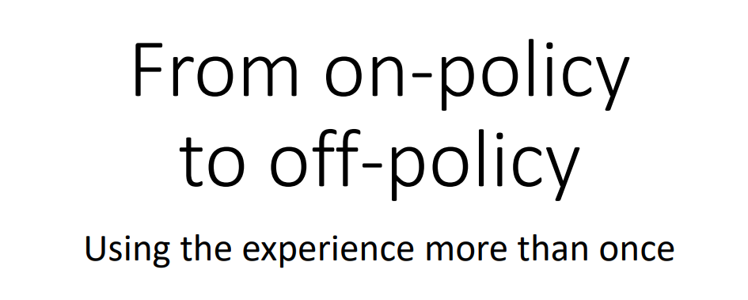
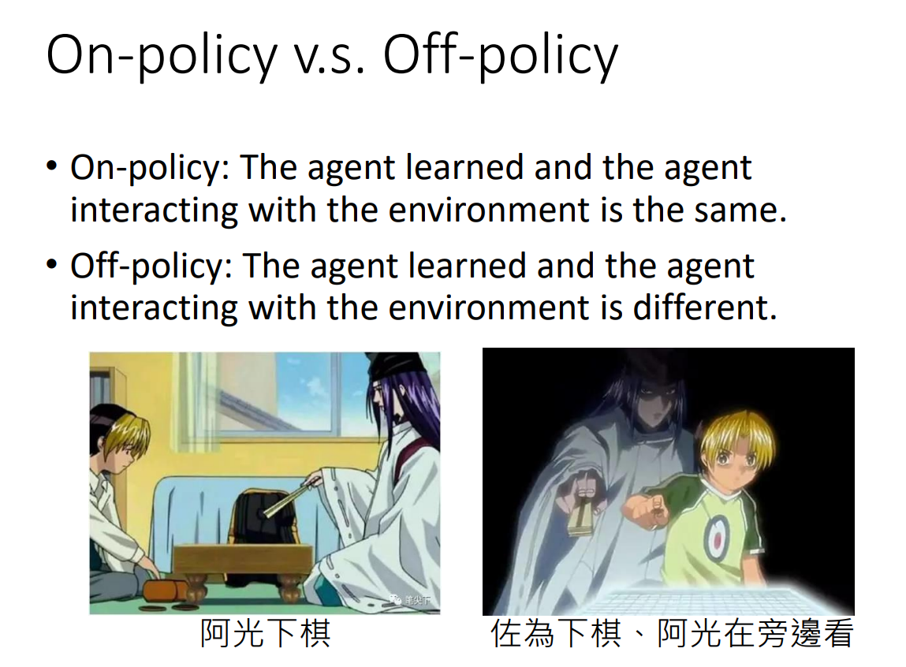
- 如果要 learn 的 agent 和与环境互动的 agent 是同一个的话，叫 on-policy，自己互动自己学；不是同一个的话，叫 off-policy
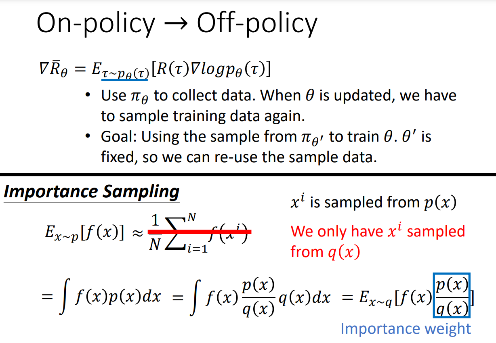
想要用 $\theta^{‘}$ collect 到的 data 去训练 $\theta$ ，意味着可以把 $\theta^{‘}$ collect 到的 data 用很多次。可以执行 gradient ascent，update 参数很多次
现在没法从 $p$ 这个 distribution 中 sample data，只能从 $q$ 中 sample data
- 需要乘一个 weight $\frac{p(x)}{q(x)}$ 修正这两个 distribution 的差异。但是不能 $q(x)=0$ 时，$p(x)$ 却不为 0，这样没有定义
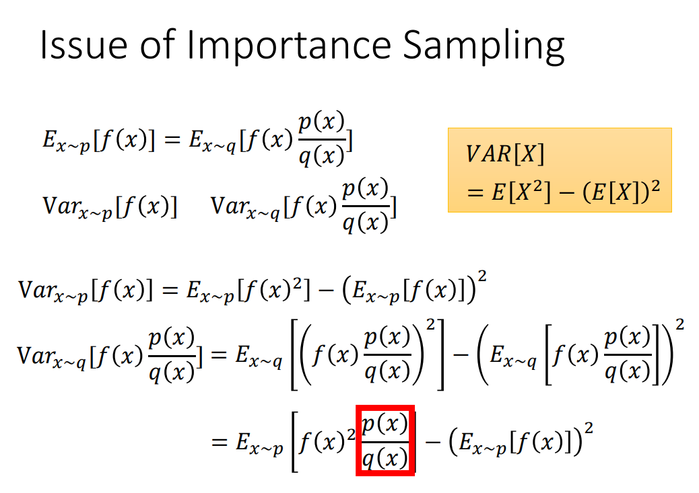
- 实际上 $p,q$ 不能差太多。期望相等，方差不等
- 理论上只要对 $p,q$ sample 足够多次，得到的结果是一样的；但假设 sample 的次数不够多，因为他们的 variance 差距大，所以可能得到较大的差别
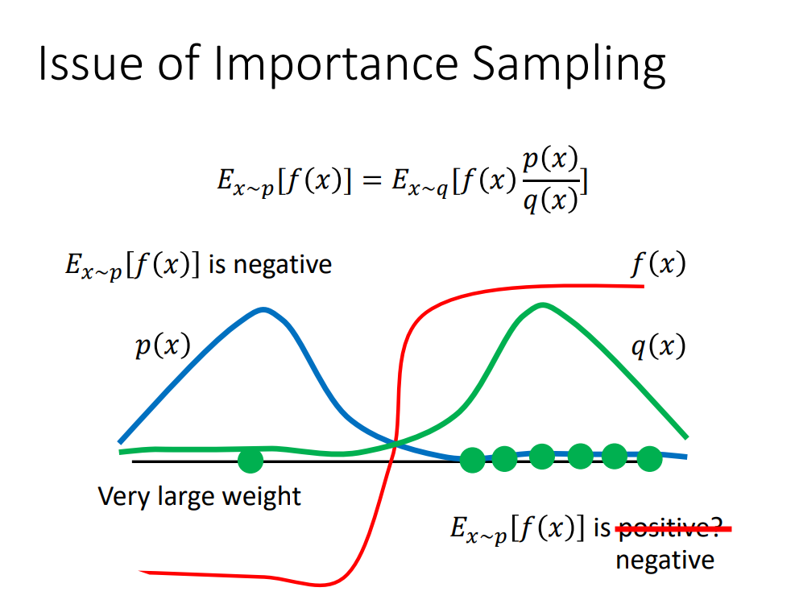
- 图为当 $p,q$ 相差较大时
- 如果 sample 次数较少，$p$ 只 sample 到左侧，$q$ 只 sample 到右侧。结果会等式左侧为负，等式右边为正
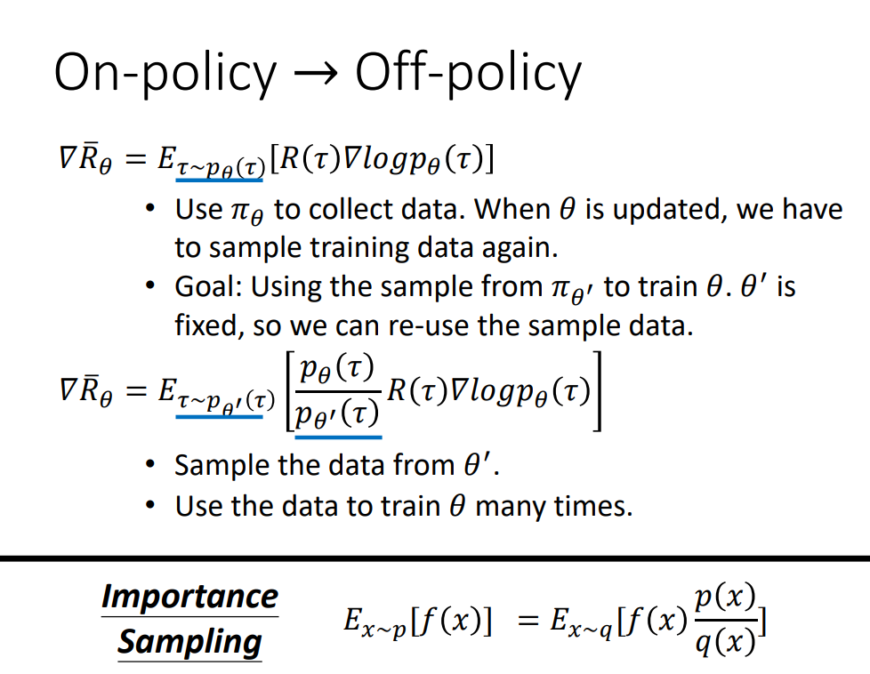
- $\theta^{‘}$ 负责和环境做互动，示范给 $\theta$ 看。本来是从 $p_{\theta}$ 做 sample，现在从 $p_{\theta^{‘}}$ 做 sample
- 和环境互动的是 $\theta^{‘}$ 而不是 $\theta$ ，所以 sample 出来的东西和 $\theta$ 本身是没有关系的。所以可以让 $\theta^{‘}$ 做互动，sample 一大堆 data 后，$\theta$ 可以 update 很多次
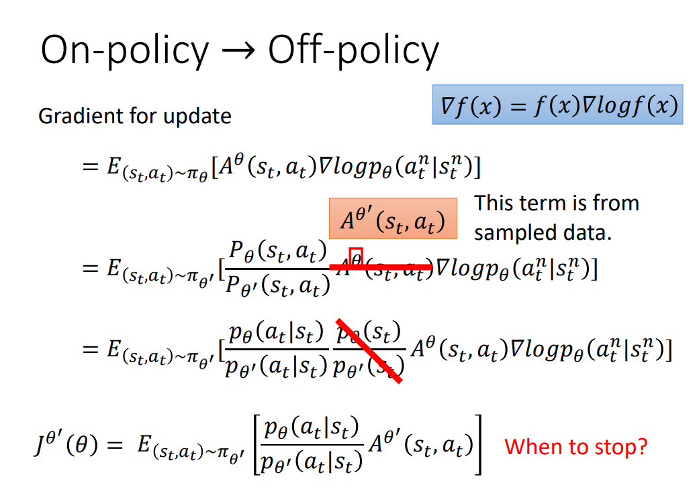
- 现在应该把 $A^{\theta}(s_t,a_t)$ 换成 $A^{\theta^{‘}}(s_t,a_t)$ 。$A$ 这一项是想要估测说现在在某一个 state，采取某一个 action，接下来会得到的 accumulated reward 的值剪掉 baseline。现在 advantage 是根据 $\theta^{‘}$ 估计出来的。这里假设这两项差不多
- 会看到什么 state 往往和会采取什么 action 没有太大的关系，因此假设 $p_{\theta}(s_t)$ 和 $p_{\theta^{‘}}(s_t)$ 差不多，而且这两项不好算。但是 $p_{\theta}(a_t|s_t),p_{\theta^{‘}}(a_t|s_t)$ 是好算的，把 $s_t$ 带入网络，就会告诉我们每一个 $a_t$ 的几率是多少
- 整体的这一项是 gradient，我们从 gradient 去反推原来的 objective function $J^{\theta^{‘}}(\theta)$。用的主要是 $\nabla f(x)=f(x)\nabla\log f(x)$ 这个式子
- 如果 $p_{\theta}$ 和 $p_{\theta^{‘}}$ 差太多，importance sampling 结果就会不好
- 如何避免两者差太多，这个就是 PPO 在做的事情
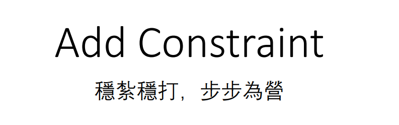
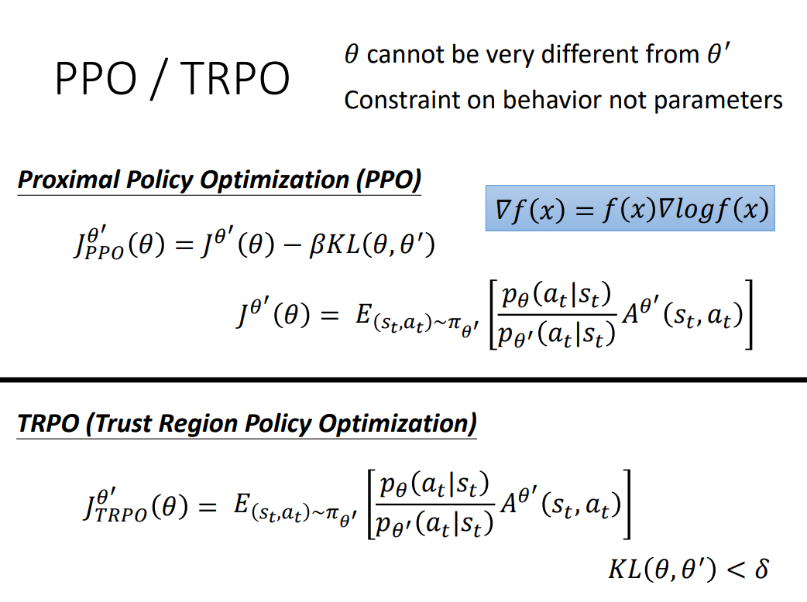
- 在 training 时多加一个 constraint。这个 constraint 是 $\theta,\theta^{‘}$ 这两个 model 它们 output 的 action 的 KL divergence。注意这里不是把 $\theta,\theta^{‘}$ 当作两个 distribution 算它们之间的距离
- 考虑的不是参数上的距离，而是 action 上的距离，是因为很有可能对 actor 来说，参数的变化和 action 的变化，不一定完全一致
- TRPO 是 PPO 的前身
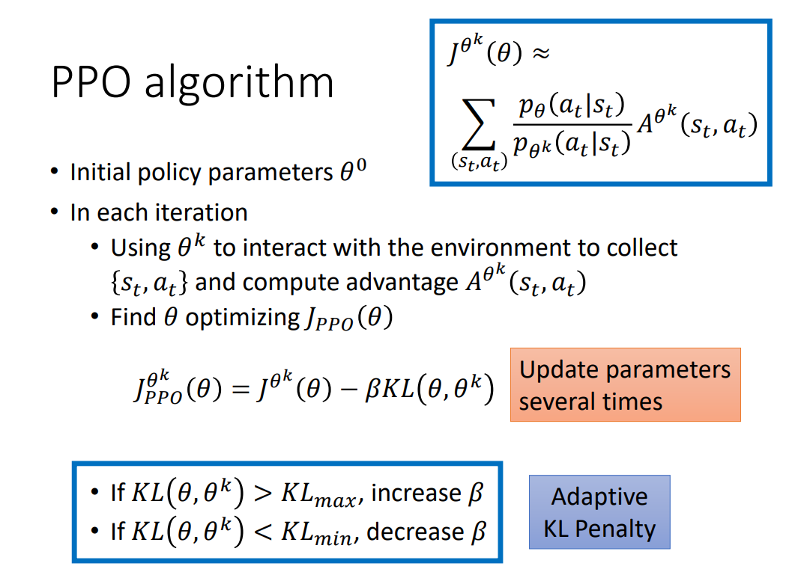
- 可以让 $\theta$ update 很多次
- 动态调整 $\beta$
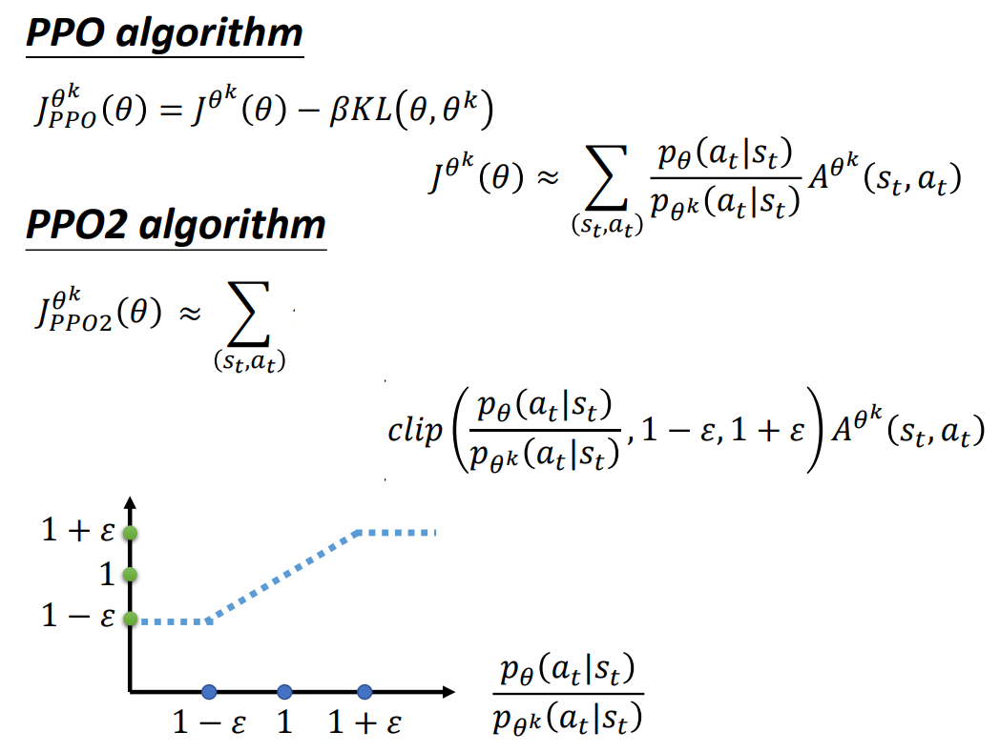
- clip 这一项的理解：第一项小于第二项的话，就 output $1-\epsilon$，第一项如果大于第三项的话，就 output $1+\epsilon$
- 横轴是 $\frac{p_{\theta}(a_t|s_t)}{p_{\theta^{k}}(a_t|s_t)}$，纵轴是 clip 这个 function 实际的输出
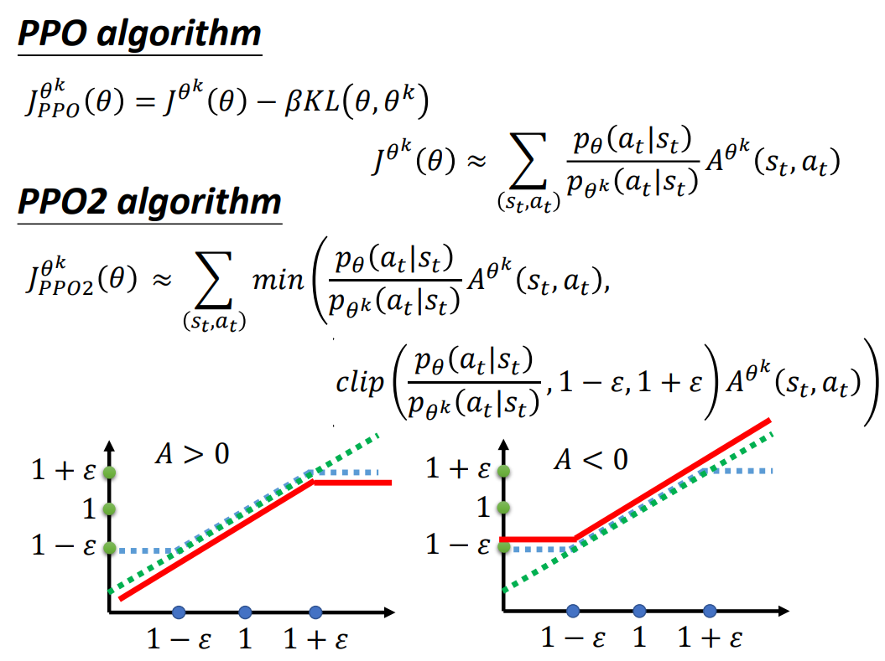
- min 函数前面的那一项是绿色的那条线
- 如果 $A$ 大于 0，即 $s_t,a_t$ 的 pair 是好的，我们就想要增加这个 state/action pair 的几率，想要让 $p_{\theta}(a_t|s_t)$ 越大越好，但同时要限制它和 $p_{\theta^{‘}}(a_t|s_t)$ 的比值不超过 $1+\epsilon$。只要比值超过，就没有 benefit 了；$A$ 小于 0，同理
本博客所有文章除特别声明外，均采用 CC BY-NC-SA 4.0 许可协议。转载请注明来自 Seline's blog！